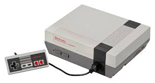
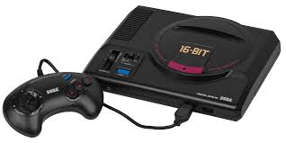

Em 1958, o físico William Higinbotham criou o jogo chamado Tennis for Two, em um aparelho chamado osciloscópio, para entreter os visitantes do laboratório conhecido como Brookhaven. Esse jogo foi o primeiro a ser mostrado ao público.
Tennis for Two, 1958Tennis for Two, 1958Tennis for Two, 1958
No ano de 1961, alguns estudantes do Instituto de Tecnologia de Massachusetts criaram o jogo chamado Spacewar!, em que duas naves espaciais atiravam torpedos contra a outra.
No centro do cenário, um buraco negro precisava ser desviado para não causar dano a essas naves. Foi o primeiro jogo que influenciou e teve grande reconhecimento, de fato.
Spacewar!, 1961Spacewar!, 1961Spacewar!, 1961
Então, percebe-se que os primórdios dos videogames circulavam apenas no ambiente universitário através dos estudantes e desenvolvedores dessas instituições de ensino.
O começo dos videogames com telas de TV
No ano de 1967, foi criado o primeiro jogo que utilizava o televisor. Esse jogo foi criado pelo engenheiro alemão Ralph Baer e consistia em duas raquetes que podiam ser movidas para cima e para baixo,
com uma rede no meio da tela e uma bola que, ao tocar em uma das raquetes, era lançada para o lado contrário. Esse jogo teve sua variação lançada anos depois pela empresa Atari e
ficou conhecido como Pong.
A partir da década de 1970, o desenvolvimento de jogos já atingia vários setores, como os famosos fliperamas e os computadores de universidades e domésticos. Em 1970, Nolan Bushnell, com a assistência de
Ted Dabney, utilizou o quarto de sua filha para a criação de uma máquina que pudesse ser conectada a uma televisão para jogar o conhecido Spacewar!. Esse videogame
ficou conhecido como Computer Space.
Computer Space, 1970Computer Space, 1970Computer Space, 1970
Em 1971, mais precisamente setembro, foi operado o primeiro jogo com moeda que foi instalado na Universidade de Stanford. Também nesse ano, a Computer Space foi comprada pela fabricante Nutting Associates, porém
sem sucesso com o público. Após esse evento, os criadores Bushnell e Dabney saem dessa empresa e começam com a criação de uma empresa que revolucionou e ficou para a história dos videogames: a Atari.
A partir da fundação da Atari, os dois fundadores programam o jogo que ficou conhecido como Pong. No início, não despertou o interesse de grandes empresas desse ramo, então decide testar em um bar.
Com isso, consegue um sucesso imenso, com a superlotação das máquinas de moedas em duas semanas. Esse jogo chegou ao Brasil anos depois, em 1977, pela fabricante Philco e foi chamado de Telejogo.
Pong, 1972Pong, 1972Pong, 1972
O lançamento dos videogames domésticos
No ano de 1972, foi lançado o primeiro videogame doméstico que foi chamado de Magnavox Odyssey, que foi uma readaptação do console criado pelo engenheiro Ralph Baer,
que possuia um hardware complexo, funcionando a base de bateria, além de não possuir som. Nos anos seguintes, foram lançadas novas versões desse console, cada uma com mais jogos que a anterior.
Depois do lançamento do primeiro console doméstico, foi a vez do Pong, em 1975, chegar às casas na forma de um console que simulava o fliperama. Em 1976, a Atari foi vendida para a Warner Communications, porém
Bushnell, que era um dos fundadores, continuou como presidente da Atari.
O primeiro console que utilizava cartuchos foi lançado no ano de 1976, com o nome de Fairchild Channel F. No total, foram lançados 26 jogos, em cartucho e numerados, para esse console e sua popularidade caiu, em 1977,
com o lançamento do Atari VCS 2600, que teve 9 jogos e foi o console mais popular da época.
Após isso, no ano de 1978, ocorreu o lançamento do fliperama chamado Space Invaders, criado pela empresa japonesa Taito. Consistia em atirar em invasores que vinham do espaço e seu efeito sonoro foi baseado no som do coração,
simulando, inclusive, os momentos de adrenalina aumentando a frequência das batidas. Um ano depois, a Atari fez sua versão desse jogo para o console VCS, resultando em um sucesso de vendas.
No ano de 1979, a empresa Atari fez o jogo que mais tem sucesso de toda a sua história e foi chamado de Asteroids. Foi nesse jogo que a função de gravar as melhores pontuações dos jogadores com suas iniciais. Após desentendimentos
internos na Atari, foi fundada a empresa que é conhecida até hoje no mundo dos games chamada de Activision e é considerada a primeira desenvolvedora de jogos terceirizada.
A temática de guerra nos jogos
Também, em 1979, foi lançado o primeiro jogo em primeira pessoa e tridimensional, que ocorria em um cenário simulado de guerra e o jogador controlava um tanque para eliminar diversos alvos, chamado de Battlezone. Foi a partir desse
jogo que foi firmado uma ligação entre o desenvolvimento destes e a temática de guerra.
Isso também ocorreu devido ao período em que os jogos estavam em constante crescimento, que foi a guerra fria, e as emoções dos desenvolvedores eram passadas ao público de uma forma divertida ao meio de uma disputa entre o socialismo e o capitalismo, com grandes avanços
tecnológicos na época.
Battlezone, 1979Battlezone, 1979Battlezone, 1979
Nos computadores, os jogos continuavam concentrados no ambiente universitário, sem serem comercializados em grande escala. Em razão disso, tem-se pouca informação sobre os jogos dessa época.
A protagonização de personagens virtuais
O ano de 1980 começou com um grande lançamento, no Japão, que ficou conhecido como Pac-Man, chamado por muitos no Brasil como "Come-Come".
Pac-Man, 1980Pac-Man, 1980Pac-Man, 1980
O jogo se baseava em um personagem principal que tinha como objetivo, basicamente, comer. Com isso muitas pessoas se identificaram com esse personagem, levando ao sucesso absoluto com um público
altamente diversificado, entre eles, homens, mulheres e crianças.
Após uma grave crise de criatividade da empresa Atari e também com sua queda enorme no mercado, a empresa decretou o fim dos consoles caseiros, inclusive enterrando vários cartuchos devido ao fracasso
de vendas. Em 1984, o mercado de jogos feitos para computadores superou o de consoles domésticos por causa dessa crise, devido a jogabilidade muito parecida e ligar e desligar um computador era tão fácil
como um console. Com os dois computadores que fizeram sucesso, o Commodore 64 e ZX Spectrum, os jogos para PC começaram a se firmar.
Com a extrema necessidade de criatividade no mercado, o russo Alex Pajitnov criou o jogo muito famoso chamado de Tetris.
Tetris, 1984Tetris, 1984Tetris, 1984
Nesse mesmo período, foi a vez da empresa Nintendo se consagrar nesse mercado. Ela era responsável por distribuir o videogame Magnavox
e também era responsável pelo console Famicom. No ano de 1985, a Nintendo lança o NES (Nintendo Entertainment System) no mercado americano,
que nada mais era o Famicom com novo nome.
NES, 1985NES, 1985NES, 1985
Após esses acontecimentos, a Nintendo sentiu uma necessidade de criar uma história em seus jogos e, para isso, era necessário ter um ótimo protagonista. Com isso, foi criado o personagem encanador Mario, em 1983, com
as seguintes características: bigode, usando um chapéu, já que não era possível representar os cabelos, e tinha um nariz grande. Mario veio para salvar o videogame doméstico em 1985, com a criação do jogo
Super Mario Bros., que vinha junto ao videogame NES comercializado nos EUA.
Super Mario Bros., 1985Super Mario Bros., 1985Super Mario Bros., 1985
No ano de 1986, o NES ganhou o seu primeiro concorrente, chamado de Sega Master System, que foi criado para aproveitar a grande aceitação
do mercado pós-crise.
Sega Master System, 1986Sega Master System, 1986Sega Master System, 1986
Também, em 1986, foi criado um novo jogo pela Nintendo e ficou conhecido como The Legend of Zelda, com uma grande história do bem contra o mal e com seu protagonista sendo chamado
de Link.
The Legend of Zelda, 1986The Legend of Zelda, 1986The Legend of Zelda, 1986
A evolução dos jogos
O final da década de 80 foi o começo de grandes inovações e também sucesso no mercado para o mundo dos games. Nessa época foi lançado o TurboGrafx-16, um console de 16-bit com tocador de CD. Foi a primeira vez
em que jogos poderiam ser rodados do CD. Também ocorreu o lançamento do Sega Genesis, um console de 16-bit que vinha com o jogo Altered Beast.
TurboGrafx-16, 1987TurboGrafx-16, 1987TurboGrafx-16, 1987Sega Genesis, 1988Sega Genesis, 1988Sega Genesis, 1988Altered Beast, 1988Altered Beast, 1988Altered Beast, 1988
No ano de 1989, foi aumentado a qualidade do áudio para jogos no computador por causa das placas Sound Blaster, da empresa Creative Labs, superando as anteriores Ad Lib que eram o padrão.
Os anos 90 marcaram os videogames como um período de grande inovação, da evolução dos pixels para os gráficos 3D graças ao maior poder dos processadores para computador e também as melhorias dos aspectos multimídia que foram possibilitados pelas
placas de áudio e CD-ROM. Também, nesta época, que os gêneros conhecidos até hoje, FPS (First Person Shooter, que significa tiro em primeira pessoa), RTS (Real-time strategy, traduzido para estratégia em tempo real no Brasil), e o MMO (Massive Multiplayer Online)
se popularizaram.
Também foi nessa década que os consoles domésticos superaram os arcades. Já em 1990, a Nintendo começa lançando o jogo Super Mario 3, que foi o jogo de cartucho mais vendido de toda a história, e lança, também, o videogame
Super Famicom, que tinha um sistema de 16-bit com gráficos 3D e áudio superior aos seus concorrentes Genesis e TurboGrafx.
Nesse ano surgiu no mercado um novo console chamado de NeoGeo, que era um console de 24-bit e superava sua concorrência, porém seu preço elevado influenciou negativamente em suas vendas.
Em 1991, é lançado a versão estadunidense do console Super Famicom que foi chamado de Super NES (SNES). Nesse mesmo ano, foi lançado o jogo Street Fighter 2
que foi um sucesso e "reviveu" os arcades.
SNES, 1991SNES, 1991SNES, 1991
Já a Sega fez sua aposta em sucessos do arcade sendo lançados em versões caseiras como Afterburner II, E-Swat e outros títulos foram dos fliperamas para as televisões. No fim do ano, a Commodore anuncia o CDTV,
que era um computador sem teclado. Foi o primeiro sistema que possuia softwares com funcão educacional além dos jogos e todos vinham em CDs.
Com o objetivo de competir com o protagonista Mario, a Sega apresenta o porco-espinho mais famoso dos games que foi chamado de Sonic. Também foi nessa década que o debate sobre o nível de violência mostrado nos jogos, como o
Mortal Kombat, chamaram a atenção dos congressistas estadunidenses. Com isso, foi criado um sistema chamado ERSB, que indica a idade recomendada e o nível de violência do jogo na sua capa.
Em 1994, foi lançado, no Japão, um dos videogames de maior sucesso até hoje chamado de Sony Playstation. Antes, a Sony trabalhou com a Nintendo para lançar um videogame com CD e também com uma entrada para cartucho, porém nunca foi lançado.
No mesmo ano, foi lançado o concorrente desse videogame que foi chamado de Sega Saturn. No ano de 1995, ambos chegaram aos EUA e o Playstation, com menor preço e maior quantidade de jogos, fez sucesso
no mercado.
Sega Saturn, 1994Sega Saturn, 1994Sega Saturn, 1994
Para competir com esses dois consoles, a Nintendo lançou em 1996, no Japão, o N64 (Nintendo 64). Porém, ainda que no início vendeu bem, o console sofreu com uma carência de jogos, já que o tempo de desenvolvimento de um jogo e outro era até de meses.
No ano seguinte, o console chega aos EUA.
No natal de 1996, a Sony e a Nintendo vendem milhões de unidades dos seus consoles. Na disputa, o Playstation chegou a 20 milhões de unidades vendidas em abril de 1997 e a Nintendo lança uma nova versão do SNES,
o Super Nintendo 2.0. Um jogo consegue a marca de 300 mil unidades vendidas, consolidando o sucesso do N64, no final de 1997, chamado de StarFox em apenas 5 dias.
Sony Playstation e N64Sony Playstation e N64Sony Playstation e N64
A modernização dos videogames
Em 1998, foi lançado o tão esperado The Legend of Zelda para N64. Com o total de 325 mil reservas para esse jogo, tornou-se o mais esperado de toda a história. No total, foram vendidas 2,5 milhões de unidades
que geraram o montante de US$ 150 milhões.
A Sega, apesar do fim do Sega Saturn nos EUA e das suas crises gerenciais, anuncia um novo videogame chamado de Sega Dreamcast, que foi lançado em 1998 no Japão. No fim da década de 1990, a polêmica da emulação
ganha destaque, e os sites que oferecem ROMs dos jogos sofriam a ameaça de serem fechados e até hoje não se tem uma definição sobre a legalidade dos emuladores.
Sega Dreamcast, 1998Sega Dreamcast, 1998Sega Dreamcast, 1998
A Microsoft entra no mercado de consoles em 1999, com o anúncio do Xbox. Assim como o console anunciado pela Sega, o videogame da Microsoft possuiria o sistema operacional Windows CE. A Sony aproveita o momento e, aos poucos, informa sobre novidades
do seu novo console chamado de Playstation 2.
O ano 2000 começa com o lançamento do Playstation 2 no Japão. Em dois dias, foram vendidas 1 milhão de unidades desse console e nem todos que reservaram conseguiram adquirir um. Para competir com a Sony, a Microsoft anuncia que seu novo console teria
um processador Pentium III de 733 MHz, placa de vídeo Nvidia e conexão com a internet. O console foi lançado no final de 2001 e alcançou, rapidamente, a marca de 1 milhão de unidades vendidas. Com o fim da fabricação do Sony Playstation, a Sony lança uma
versão compacta, o PSOne, com um tamanho reduzido e com a possibilidade de usar uma tela de LCD pequena, possibilitando o fácil transporte dele.
Playstation 2, 2000Playstation 2, 2000Playstation 2, 2000Xbox, 2001Xbox, 2001Xbox, 2001
Em 2001, os jogos Quake III Arena e Unreal Tournament foram os primeiros jogos compatíveis com o modo online usando a internet banda larga. A Nintendo lança, em setembro de 2001, o GameCube.
Nintendo GameCube, 2001Nintendo GameCube, 2001Nintendo GameCube, 2001
Em 2005 e 2006 foram lançados os dois videogames que definem o padrão de qualidade dos jogos até hoje: Xbox 360 e Playstation 3, respectivamente. Com os chamados gráficos em alta definição, discos rígidos de armazenamento e suporte a uma rede integrada para jogar online,
chamada de Live, para o Xbox 360, e Playstation Network, para o Playstation 3, esses dois consoles representam ótimos sistemas que oferecem experiências surreais de jogo, batendo de frente com os computadores por um preço mais baixo.
A Nintendo investe em um tipo diferente de jogador com o Wii. Com especificações técnicas inferiores aos seus concorrentes, ele compensa em jogos divertidos para a família e novas experiências com seu controle com sensor de movimento. Mesmo sendo
inferior tecnicamente, obtém sucesso absoluto em vendas.
Nintendo Wii, 2006Nintendo Wii, 2006Nintendo Wii, 2006
Uma marca que o novo milênio trouxe para os jogos foram os mods, sendo também um mod que se tornou um dos FPS mais jogados em todo o mundo e foi chamado de Counter-Strike, que se originou do jogo Half-Life.
Também a relação entre jogos e filmes se tornou mais estreita, causando mudanças na narrativa. O estilo hollywoodiano chegou aos jogos, os enredos ficaram mais densos e próximos dos jogadores e até atores passaram a dublar os protagonistas dos jogos. Com isso, os jogos ganharam uma representação
cinematográfica.
A geração atual de videogames
Em 2013, foram lançados dois consoles: Playstation 4 e Xbox One. Esses consoles marcam um início de grandes inovações tecnológicas, entre elas o uso constante de internet e também de mídias digitais que são baixadas através de suas respectivas lojas.
Jogos se tornaram além de diversão e são até disputados por meio dos e-sports (Esportes Eletrônicos) atualmente, possuindo profissionais nos mais diversos jogos disponíveis e com campeonatos com alto número de pessoas assistindo, além de altas premiações para os vencedores. Dois desses jogos
são o Counter-Strike: Global Offensive e o League of Legends. Enfim, jogos se tornaram extremamente famosos e raramente será visto alguém que nunca jogou algum, seja no celular, no computador ou nos videogames, e
representam parte importante da economia atualmente com ações na bolsa de valores das diversas empresas desse ramo, como a Activision, Ubisoft, Rockstar Games e a Naughty Dog.
No ano de 2020 está acontecendo o lançamento da nova geração dos videogames, sendo eles o Playstation 5 e o Xbox Series X e Series S. O grande diferencial dessa nova geração é a presença do tipo de armazenamento SSD (Solid State Drive),
em que possibilita uma taxa de transferência de arquivos extremamente mais alta que a do convencional HDD (Hard Disk Drive), o que permite um tempo de carregamento dos jogos muito menor.
Playstation 5, 2020Playstation 5, 2020Playstation 5, 2020Xbox Series S e Series X, 2020Xbox Series S e Series X, 2020Xbox Series S e Series X, 2020
A diferença entre essas duas versões do Xbox basicamente se referem ao poder gráfico, com as duas possuindo suporte ao HDMI 2.1, taxas de quadros de até 120fps e o DirectX Ray Tracing, a versão Series X possui 12 teraflops e tem a capacidade de renderizar
jogos na resolução 4K (3840x2160), já a versão mais barata que ele, a Series S, tem 4 teraflops de processamento e fica limitado a uma resolução de 1440p, além das diferentes capacidades dos seus SSD, com o Series X possuindo 1TB de armazenamento e o
Series S possuindo 512GB.
Já com o Playstation 5, traz um suporte ao 4K e também 8K, HDR e ray tracing, com até 120 qps (quadros por segundo). Esse novo console da Sony possui duas versões, que se diferem basicamente com uma possuindo leitor de Blu-Ray e outra não o tendo.